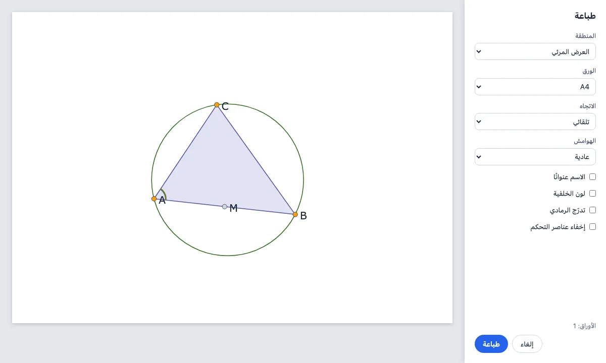
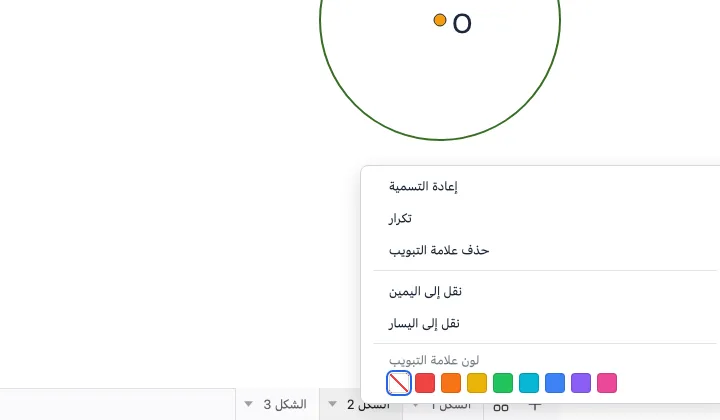

الفتح والحفظ
الفتح
فتح يحمّل ملفًا:
| الامتداد | المصدر |
|---|---|
.dgo |
DocGeo، الصيغة الأصلية |
.dgp |
DGPad، مستورد |
.ggb |
GeoGebra، مستورد |
يمكن أيضًا سحب أيقونة الملف وإفلاتها على الصفحة، في المحرر كما في القارئ.
يحل الشكل المفتوح محل الشكل الحالي ويفرغ سجل التراجع.
يُفتح الشكل المنشور على الإنترنت أيضًا برابط (انظر مشاركة شكل برابط).
تتيح قائمة ملف أيضًا فتح… (Ctrl O) وشكل جديد، الذي يبدأ من شكل فارغ.
المستندات الحديثة
يعرض ملف › فتح مستند حديث آخر عشرة أشكال فُتحت أو حُفظت، الأحدث أولًا: في Chrome وEdge، ملفات الحاسوب؛ وفي كل المتصفحات، الأشكال المفتوحة عبر رابط. قد يطلب المتصفح من جديد الإذن بقراءة الملف. يُنبَّه إلى الملف الذي نُقل أو أُعيدت تسميته أو حُذف منذ ذلك الحين ويُزال من القائمة. ويُفرغها مسح القائمة.
الاستيراد غير المكتمل
يُتجاهل عنصر DGPad أو GeoGebra غير المدعوم مع العناصر التابعة له؛ ويعرض الإرشاد قائمتها («لم يُستورد: …»). التفاصيل في الاستيراد من DGPad وGeoGebra.
الحفظ
يحفظ أو حفظ من قائمة
ملف أو Ctrl S الشكلَ
بصيغة .dgo. ويُحفظ العرض (التكبير، اتجاه الأبعاد
الثلاثة، المَعلم).
في Chrome وEdge، يحفظ DocGeo كما يحفظ أي تطبيق: يسأل الحفظ الأول
عن مكان الملف، ثم يستبدله الحفظ التالي دون سؤال. الشكل
.dgo المفتوح بـ أو المُفلَت
على الصفحة يُحفظ في ملفه؛ ويطلب المتصفح مرة واحدة الإذن بتعديله.
لا يُستبدل أبدًا شكل DGPad أو GeoGebra: يُنشئ حفظه الأول ملف
.dgo. ويختار حفظ باسم… (Ctrl
Shift S) ملفًا آخر.
يظهر اسم الملف في طرف شريط القوائم، وتشير نقطة حمراء إلى تغييرات غير محفوظة. تختفي عند الحفظ، أو عند التراجع حتى الحالة المحفوظة. ولا يُعدّ تحريك العرض أو تكبيره تغييرًا.
في المتصفحات الأخرى (Firefox، Safari)، أو عندما يكون DocGeo
مدمجًا في صفحة أخرى، ينزّل الحفظ الشكلَ باسم الشكل المفتوح
(figure.dgo لشكل جديد).
.dgo هي صيغة الحفظ الوحيدة: فتح شكل من DGPad أو
GeoGebra ثم حفظه يحوّله إليها.
استعادة شكل غير محفوظ
ما دامت في الشكل تغييرات غير محفوظة، يحتفظ DocGeo بنسخة منه في المتصفح. إذا أُغلق المحرر قبل حفظه (نافذة أُغلقت خطأً، عطل)، يظهر الشكل مؤرَّخًا تحت أشكال غير محفوظة في أعلى ملف › فتح مستند حديث: وعند اختياره يعود، ولا يزال معلَّمًا بأنه غير محفوظ. تُحفظ هذه النسخ أربعة عشر يومًا، وعشر نسخ على الأكثر؛ ويحذفها مسح القائمة أيضًا.
تبقى هذه النسخة في متصفح هذا الحاسوب: فهي لا تغني عن الحفظ. ولا يُحتفظ بشيء عندما يكون DocGeo مضمَّنًا في صفحة أخرى.
الطباعة
يعرض ملف › طباعة… (Ctrl P) معاينة الأوراق بجانب إعداداتها. ثم يفتح زر طباعة نافذة الطباعة في المتصفح، التي تتيح أيضًا الحفظ بصيغة PDF.

يملأ الشكل الورقة حتى الهوامش: تمتد المستقيمات والمنحنيات حتى الحافة. ولا يُكبَّر أبدًا في البداية: تحتفظ الخطوط والتسميات بحجمها على الشاشة.
- السحب على ورقة يحرّك الشكل، وعجلة الفأرة تكبّره أو تصغّره. لا يتغير عرض المحرر.
- المنطقة: العرض المرئي يوسّط الورقة على ما تعرضه الشاشة، دون الجزء الذي تخفيه لوحة الأدوات أو الخصائص؛ والشكل فقط يوسّطها على الكائنات المرسومة.
- الورق والاتجاه (تلقائي: حسب المنطقة) والهوامش. تغيير هذه الإعدادات أو المنطقة أو العنوان يعيد تأطير الأوراق.
- الاسم عنوانًا يكتب اسم الشكل، أو الصفحة، أعلى الورقة؛ ولون الخلفية يطبع خلفية الشكل؛ وتدرّج الرمادي يزيل الألوان؛ وإخفاء عناصر التحكم يزيل المنزلقات ومربعات الاختيار والحقول والقوائم والأزرار.
- في مصنف، يطبع كل علامات التبويب ورقة لكل علامة تبويب.
يغلق Esc أو إلغاء المعاينة. تبقى الإعدادات كما هي حتى إغلاق المحرر.
المصنفات: عدة علامات تبويب
يجمع المصنف عدة أشكال، كل منها في علامة تبويبه، في ملف
.dgo واحد. وتعرض علامات التبويب، أسفل الشكل، شكلًا
واحدًا في كل مرة.

- يضيف ملف › علامة تبويب جديدة علامة تبويب فارغة بعد العلامات الأخرى، باسم «الشكل 2»، «الشكل 3»…: يصبح الشكل الحالي «الشكل 1». بعد ذلك يفعل الزر + في بداية علامات التبويب الشيء نفسه، ويعرض الزر المجاور له كل علامات التبويب.
- يضيف ملف › علامة تبويب جدول بيانات جديدة علامة تبويب لا تحتوي إلا على ورقة حسابية، باسم «جدول1»، «جدول2»… (جدول البيانات).
- يضيف ملف › فتح في علامة تبويب جديدة… أشكالًا محفوظة، كل منها في علامة تبويب باسمه (ويأتي المصنف بكل علامات تبويبه). ويحفظ ملف › حفظ علامة التبويب باسم… شكل علامة التبويب المعروضة وحده.
- يفتح النقر بالزر الأيمن على علامة تبويب، أو على سهمها ▾، قائمتها: إعادة التسمية، تكرار، حذف علامة التبويب، نقل إلى اليمين أو نقل إلى اليسار، ولون علامة التبويب.
- يعيد النقر المزدوج على علامة تبويب تسميتها (Enter يؤكد، Esc يلغي)؛ ولا يمكن أن تحمل علامتا تبويب الاسم نفسه. وتغيّر علامة التبويب المسحوبة مكانها.
- علامات التبويب مستقلة: لكل منها عناصرها ومحاورها ووحدات الماكرو الخاصة بها وسجل التراجع الخاص بها، الذي تجده عند العودة إليها. ومع ذلك يمكن لصيغة أن تقرأ قيمة من علامة تبويب أخرى (قراءة علامة تبويب أخرى). أما المتغيرات العامة للبرامج فمشتركة بين المصنف كله (الكتل والسلحفاة).
- يكتب الحفظ المصنف كله، كل علامة تبويب كما تُركت؛ وعلامة التبويب المعروضة هي التي ستُفتح. ويعود المصنف الذي بقيت فيه علامة تبويب واحدة شكلًا بسيطًا.
يعرض القارئ أيضًا علامات التبويب. ولا يعرض الشكل المضمّن في صفحة ويب إلا علامة التبويب التي كانت معروضة عند الحفظ.
مشاركة شكل برابط
يُفتح الشكل المرفوع على الإنترنت برابط: عنوان المحرر، متبوعًا بـ
?url= ثم رابط الملف، ملصوقًا كما هو.
https://doctools.org/apps/docgeo/editor.html?url=https://www.dropbox.com/scl/fi/…/thales.dgo?rlkey=…&dl=0يمكن أن يأتي رابط الملف من:
| الخدمة | الرابط المطلوب نسخه |
|---|---|
| Google Drive | رابط المشاركة، مع الوصول «أي شخص لديه الرابط» |
| Dropbox | رابط المشاركة |
| OneDrive |
رابط المشاركة لحساب شخصي
(https://1drv.ms/u/c/…)
|
| Nextcloud | رابط مشاركة عام، بلا كلمة مرور |
| موقع ويب |
عنوان الملف (.dgo أو
.dgp أو .ggb)
|
تُعرف الصيغة من محتوى الملف، ويظهر اسمه في طرف شريط القوائم. لا
يُعدَّل الملف المنشور أبدًا: يُنشئ الحفظ ملف
.dgo على الحاسوب.
يأتي ?url= في آخر العنوان: كل ما يليه جزء من الرابط
(editor.html?lang=en&url=…).
تضمين شكل في صفحة ويب
يمكن أيضًا عرض شكل منشور على الإنترنت، قابلًا للتحريك، في صفحة ويب: انظر التضمين في صفحة ويب.
اللغة
يأخذ DocGeo لغة المتصفح؛ ويفرض ?lang= لغة معينة
(ar، de، el،
en، es، fr،
hi، it، nl،
pt، zh، zh-TW). وتحدد
اللغة أيضًا أسماء الأوامر (منتصف،
Milieu…)؛ والأسماء الإنجليزية مفهومة في
كل اللغات.